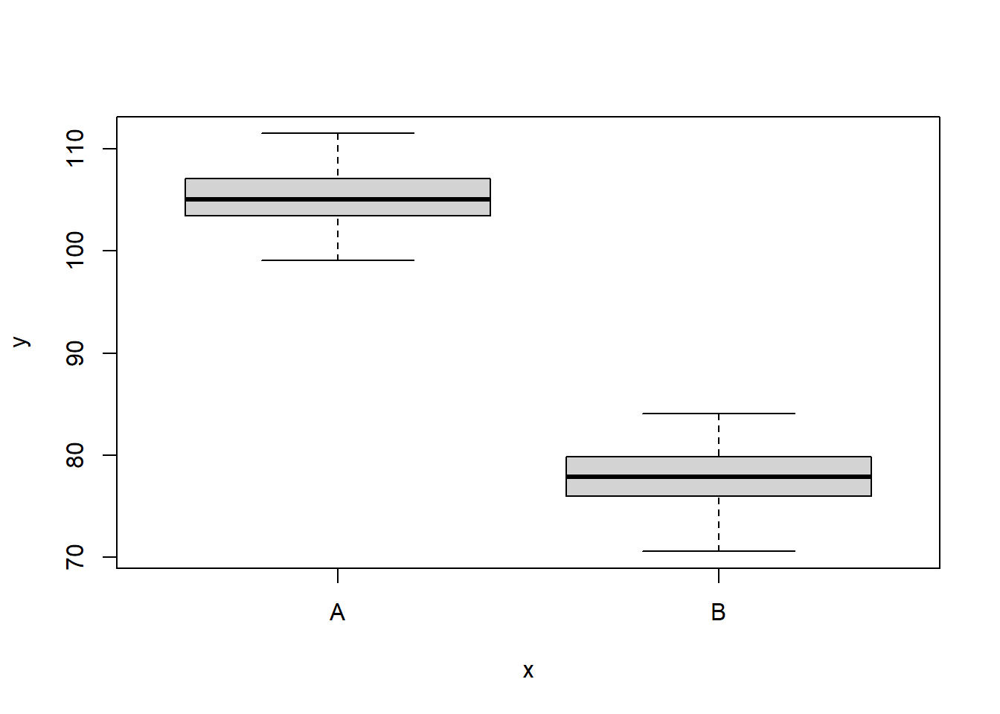

![]()
set.seed(123)
nA <- 60 #sample size from Population A
nB <- 40 #sample size from Population B
muA <- 105 #population mean of Population A
muB <- 77.5 #population mean of Population B
sigma <- 3 #standard deviation of both populations (equally varied)
yA <- rnorm(nA, muA, sigma) #Population A sample
yB <- rnorm(nB, muB, sigma) #Population B sample
y <- c(yA, yB)
x <- factor(rep(c("A", "B"), c(nA, nB))) #categorical listing of the populations
xn <- as.numeric(x) #numerical version of the population category for means parameterization. # Should not start at 0.
data <- data.frame(y, x, xn) # datasetComparing Two Populations (JAGS)
Quarto
R
Academia
Software
Statistics
Abstract
The focus of this simple tutorial is to provide a brief introduction and overview about how to fit Bayesian models using JAGS via R …
Keywords
Software, Statistics, Stan
This tutorial will focus on the use of Bayesian estimation to explore differences between two populations. BUGS (Bayesian inference Using Gibbs Sampling) is an algorithm and supporting language (resembling R) dedicated to performing the Gibbs sampling implementation of Markov Chain Monte Carlo (MCMC) method. Dialects of the BUGS language are implemented within three main projects:
OpenBUGS - written in component pascal.
JAGS - (Just Another Gibbs Sampler) - written in
C++.STAN - a dedicated Bayesian modelling framework written in
C++and implementing Hamiltonian MCMC samplers.
Whilst the above programs can be used stand-alone, they do offer the rich data pre-processing and graphical capabilities of R, and thus, they are best accessed from within R itself. As such there are multiple packages devoted to interfacing with the various software implementations:
R2OpenBUGS - interfaces with
OpenBUGSR2jags - interfaces with
JAGSrstan - interfaces with
STAN
The BUGS/JAGS/STAN languages and algorithms are very powerful and flexible. However, the cost of this power and flexibility is complexity and the need for a firm understanding of the model you wish to fit as well as the priors to be used. The algorithms requires the following inputs.
Within the model:
The likelihood function relating the response to the predictors.
The definition of the priors.
Chain properties:
The number of chains.
The length of chains (number of iterations).
The burn-in length (number of initial iterations to ignore).
The thinning rate (number of iterations to count on before storing a sample).
The initial estimates to start an MCMC chain. If there are multiple chains, these starting values can differ between chains.
The list of model parameters and derivatives to monitor (and return the posterior distributions of)
This tutorial will demonstrate how to fit models in JAGS (Plummer (2004)) using the package R2jags (Su et al. (2015)) as interface, which also requires to load some other packages.
Data generation
We will start by generating a random data set. Note, I am creating two versions of the predictor variable (a numeric version and a factorial version).
Let inspect the first few rows of the dataset using the command head
head(data)NA y x xn
NA 1 103.3186 A 1
NA 2 104.3095 A 1
NA 3 109.6761 A 1
NA 4 105.2115 A 1
NA 5 105.3879 A 1
NA 6 110.1452 A 1We can also perform some exploratory data analysis - in this case, a boxplot of the response for each level of the predictor.
boxplot(y ~ x, data)
The One Sample t-test
A t-test is essentially just a simple regression model in which the categorical predictor is represented by a binary variable in which one level is coded as \(0\) and the other \(1\). For the model itself, the observed response \(y_i\) are assumed to be drawn from a normal distribution with a given mean \(\mu\) and standard deviation \(\sigma\). The expected values are themselves determined by the linear predictor \(\mu_i=\beta_0+\beta_1x_i\), where \(\beta_0\) represents the mean of the first treatment group and \(\beta_1\) represents the difference between the mean of the first group and the mean of the second group (the effect of interest).
MCMC sampling requires priors on all parameters. We will employ weakly informative priors. Specifying “uninformative” priors is always a bit of a balancing act. If the priors are too vague (wide) the MCMC sampler can wander off into nonscence areas of likelihood rather than concentrate around areas of highest likelihood (desired when wanting the outcomes to be largely driven by the data). On the other hand, if the priors are too strong, they may have an influence on the parameters. In such a simple model, this balance is very forgiving - it is for more complex models that prior choice becomes more important. For this simple model, we will go with zero-centered Gaussian (normal) priors with relatively large standard deviations (\(1000\)) for both the intercept and the treatment effect and a wide half-cauchy (scale=\(25\)) for the standard deviation (Gelman et al. (2006)).
\[ y_i \sim \text{Normal}(\mu_i, \sigma), \]
where \(\mu_i=\beta_0+\beta_1x_i\).
Priors are defined as:
\[ \beta_j \sim \text{Normal}(0,1000), \;\;\; \text{and} \;\;\; \sigma \sim \text{Cauchy}(0,25), \]
for \(j=0,1\).
Fitting the model in JAGS
Broadly, there are two ways of parameterising (expressing the unknown (to be estimated) components of a model) a model. Either we can estimate the means of each group (Means parameterisation) or we can estimate the mean of one group and the difference between this group and the other group(s) (Effects parameterisation). The latter is commonly used for frequentist null hypothesis testing as its parameters are more consistent with the null hypothesis of interest (that the difference between the two groups equals zero).
- Effects parameterisation
\[ y_i = \beta_0 + \beta_{j}x_i + \epsilon_i, \;\;\; \text{with} \;\;\; \epsilon_i \sim \text{Normal}(0,\sigma). \]
Each \(y_i\) is modelled by an intercept \(\beta_0\) (mean of group A) plus a difference parameter \(\beta_j\) (difference between mean of group A and group B) multiplied by an indicator of which group the observation came from (\(x_i\)), plus a residual drawn from a normal distribution with mean \(0\) and standard deviation \(\sigma\). Actually, there are as many \(\beta_j\) parameters as there are groups but one of them (typically the first) is set to be equal to zero (to avoid over-parameterization). Expected values of \(y\) are modelled assuming they are drawn from a normal distribution whose mean is determined by a linear combination of effect parameters and whose variance is defined by the degree of variability in this mean. The parameters are: \(\beta_0\), \(\beta_1\) and \(\sigma\).
- Means parameterisation
\[ y_i = \beta_{j} + \epsilon_i, \;\;\; \text{with} \;\;\; \epsilon_i \sim \text{Normal}(0,\sigma). \]
Each \(y_i\) is modelled as the mean \(\beta_j\) of each group (\(j=1,2\)) plus a residual drawn from a normal distribution with a mean of zero and a standard deviation of \(\sigma\). Actually, \(\boldsymbol \beta\) is a set of \(j\) coefficients corresponding to the \(j\) dummy coded factor levels. Expected values of \(y\) are modelled assuming they are drawn from a normal distribution whose mean is determined by a linear combination of means parameters and whose variance is defined by the degree of variability in this mean. The parameters are: \(\beta_1\), \(\beta_2\) and \(\sigma\).
In JAGS, distributions are defined by their precision \(\tau\) rather than their standard deviation \(\sigma\). Precision is just the inverse of variance (\(\tau=\frac{1}{\sigma^2}\)) and are chosen as they permit the gamma distribution to be used as the conjugate prior of the variance of a normal distribution. Bayesian analyses require that priors are specified for all the parameters. We will define vague (non-informative) priors for each of the parameters such that the posterior distributions are almost entirely influenced by the likelihood (and thus the data). Hence, appropriate (conjugate) priors for the effects parameterisation could be:
\(\boldsymbol \beta \sim \text{Normal}(0,1.0\text{E-}6)\) - a very flat normal distribution centered around zero. Note, \(1.0\text{E-}6\) is scientific notation for \(0.000001\).
\(\tau \sim \text{Gamma}(0.1,0.1)\) a vague gamma distribution with a shape parameter close to zero (must be greater than \(0\)).
The JAGS language very closely matches the above model and prior definitions - hence the importance on understanding the model you wish to fit. The JAGS language resembles R in many respects. It basically consists of:
stochastic nodes - those that appear on the left hand side of \(\sim\)
deterministic nodes - those that appear on the left hand side of
<-\(R\)-like for loops and functions to transform and summarise the data
That said, JAGS is based on a declarative language, which means: the order with which statements appear in the model definition are not important; nodes should not be defined more than once (you cannot change a value).We are now in a good position to define the model (Likelihood function and prior distributions).
Effects Parameterisation
modelString = "
model {
#Likelihood
for (i in 1:n) {
y[i]~dnorm(mu[i],tau)
mu[i] <- beta0+beta[x[i]]
}
#Priors
beta0 ~ dnorm(0,1.0E-06)
beta[1] <- 0
beta[2] ~ dnorm(0,1.0E-06)
tau ~ dgamma(0.1,0.1)
sigma<-1/sqrt(tau)
#Other Derived parameters
# Group means (note, beta is a vector)
Group.means <-beta0+beta
}
"
## write the model to a text file
writeLines(modelString, con = "ttestModel.txt")Means Parameterisation
modelString.means = "
model {
#Likelihood
for (i in 1:n) {
y[i]~dnorm(mu[i],tau)
mu[i] <- beta[x[i]]
}
#Priors
for (j in min(x):max(x)) {
beta[j] ~ dnorm(0,0.001)
}
tau~dgamma(0.1,0.1)
sigma<-1/sqrt(tau)
#Other Derived parameters
effect <-beta[2]-beta[1]
}
"
## write the model to a text file
writeLines(modelString.means, con = "ttestModelMeans.txt")Arrange the data as a list (as required by JAGS). Note, all variables must be numeric, therefore we use the numeric version of \(x\). Furthermore, the first level must be \(1\).
data.list <- with(data, list(y = y, x = xn, n = nrow(data)))
data.list.means <- with(data, list(y = y, x = xn, n = nrow(data)))Define the initial values for the chain. Reasonable starting points can be gleaned from the data themselves.
inits <- list(beta0 = mean(data$y), beta = c(NA, diff(tapply(data$y,
data$x, mean))), sigma = sd(data$y/2))
inits.means <- list(beta = tapply(data$y, data$x, mean), sigma = sd(data$y/2))Define the nodes (parameters and derivatives) to monitor.
params <- c("beta0", "beta", "sigma", "Group.means")
params.means <- c("beta", "effect", "sigma")Define the chain parameters.
adaptSteps = 1000 # the number of steps over which to establish a good stepping distance
burnInSteps = 2000 # the number of initial samples to discard
nChains = 2 # the number of independed sampling chains to perform
numSavedSteps = 50000 # the total number of samples to store
thinSteps = 1 # the thinning rate
nIter = ceiling((numSavedSteps * thinSteps)/nChains)Start the JAGS model (check the model, load data into the model, specify the number of chains and compile the model). Load the R2jags package.
library(R2jags)When using the jags function (R2jags package), it is not necessary to provide initial values. However, if they are to be supplied, the inital values must be provided as a list of the same length as the number of chains.
Effects Parameterisation
data.r2jags <- jags(data=data.list,
inits=NULL, #or inits=list(inits,inits) # since there are two chains
parameters.to.save=params,
model.file="ttestModel.txt",
n.chains=nChains,
n.iter=nIter,
n.burnin=burnInSteps,
n.thin=thinSteps)NA Compiling model graph
NA Resolving undeclared variables
NA Allocating nodes
NA Graph information:
NA Observed stochastic nodes: 100
NA Unobserved stochastic nodes: 3
NA Total graph size: 214
NA
NA Initializing model#print results
print(data.r2jags)NA Inference for Bugs model at "ttestModel.txt", fit using jags,
NA 2 chains, each with 25000 iterations (first 2000 discarded)
NA n.sims = 46000 iterations saved
NA mu.vect sd.vect 2.5% 25% 50% 75% 97.5% Rhat
NA Group.means[1] 105.200 0.357 104.497 104.959 105.201 105.441 105.900 1.001
NA Group.means[2] 77.882 0.438 77.018 77.589 77.882 78.174 78.746 1.001
NA beta[1] 0.000 0.000 0.000 0.000 0.000 0.000 0.000 1.000
NA beta[2] -27.318 0.563 -28.426 -27.696 -27.315 -26.943 -26.212 1.001
NA beta0 105.200 0.357 104.497 104.959 105.201 105.441 105.900 1.001
NA sigma 2.771 0.202 2.408 2.630 2.759 2.900 3.198 1.001
NA deviance 487.192 2.485 484.376 485.370 486.547 488.331 493.506 1.001
NA n.eff
NA Group.means[1] 46000
NA Group.means[2] 15000
NA beta[1] 1
NA beta[2] 35000
NA beta0 46000
NA sigma 46000
NA deviance 46000
NA
NA For each parameter, n.eff is a crude measure of effective sample size,
NA and Rhat is the potential scale reduction factor (at convergence, Rhat=1).
NA
NA DIC info (using the rule, pD = var(deviance)/2)
NA pD = 3.1 and DIC = 490.3
NA DIC is an estimate of expected predictive error (lower deviance is better).Means Parameterisation
data.r2jags.means <- jags(data=data.list.means,
inits=NULL, #or inits=list(inits.means,inits.means) # since there are two chains
parameters.to.save=params.means,
model.file="ttestModelMeans.txt",
n.chains=nChains,
n.iter=nIter,
n.burnin=burnInSteps,
n.thin=thinSteps)NA Compiling model graph
NA Resolving undeclared variables
NA Allocating nodes
NA Graph information:
NA Observed stochastic nodes: 100
NA Unobserved stochastic nodes: 3
NA Total graph size: 211
NA
NA Initializing model#print results
print(data.r2jags.means)NA Inference for Bugs model at "ttestModelMeans.txt", fit using jags,
NA 2 chains, each with 25000 iterations (first 2000 discarded)
NA n.sims = 46000 iterations saved
NA mu.vect sd.vect 2.5% 25% 50% 75% 97.5% Rhat n.eff
NA beta[1] 105.184 0.357 104.481 104.947 105.184 105.423 105.884 1.001 46000
NA beta[2] 77.867 0.439 77.001 77.575 77.866 78.160 78.736 1.001 39000
NA effect -27.317 0.566 -28.433 -27.696 -27.317 -26.940 -26.197 1.001 46000
NA sigma 2.768 0.201 2.408 2.626 2.755 2.897 3.192 1.001 34000
NA deviance 487.195 2.498 484.360 485.377 486.540 488.323 493.721 1.001 46000
NA
NA For each parameter, n.eff is a crude measure of effective sample size,
NA and Rhat is the potential scale reduction factor (at convergence, Rhat=1).
NA
NA DIC info (using the rule, pD = var(deviance)/2)
NA pD = 3.1 and DIC = 490.3
NA DIC is an estimate of expected predictive error (lower deviance is better).Notes
If
inits=NULLthejagsfunction will generate vaguely sensible initial values for each chain based on the data.In addition to the mean and quantiles of each of the sample nodes, the
jagsfunction will calculate.The effective sample size for each sample - if
n.efffor a node is substantially less than the number of iterations, then it suggests poor mixing.The Potential scale reduction factor or
Rhatvalues for each sample - these are a convergence diagnostic (values of \(1\) indicate full convergence, values greater than \(1.01\) are indicative of non-convergence.An information criteria (DIC) for model selection.
The total number samples collected is \(46000\). That is, there are \(46000\) samples collected from the multidimensional posterior distribution and thus, \(46000\) samples collected from the posterior distributions of each parameter. The effective number of samples column indicates the number of independent samples represented in the total. It is clear that for all parameters the chains were well mixed.
MCMC diagnostics
In addition to the regular model diagnostic checks (such as residual plots), for Bayesian analyses, it is necessary to explore the characteristics of the MCMC chains and the sampler in general. Recall that the purpose of MCMC sampling is to replicate the posterior distribution of the model likelihood and priors by drawing a known number of samples from this posterior (thereby formulating a probability distribution). This is only reliable if the MCMC samples accurately reflect the posterior. Unfortunately, since we only know the posterior in the most trivial of circumstances, it is necessary to rely on indirect measures of how accurately the MCMC samples are likely to reflect the likelihood. I will briefly outline the most important diagnostics.
Traceplots for each parameter illustrate the MCMC sample values after each successive iteration along the chain. Bad chain mixing (characterised by any sort of pattern) suggests that the MCMC sampling chains may not have completely traversed all features of the posterior distribution and that more iterations are required to ensure the distribution has been accurately represented.
Autocorrelation plot for each parameter illustrate the degree of correlation between MCMC samples separated by different lags. For example, a lag of \(0\) represents the degree of correlation between each MCMC sample and itself (obviously this will be a correlation of \(1\)). A lag of \(1\) represents the degree of correlation between each MCMC sample and the next sample along the chain and so on. In order to be able to generate unbiased estimates of parameters, the MCMC samples should be independent (uncorrelated).
Potential scale reduction factor (Rhat) statistic for each parameter provides a measure of sampling efficiency/effectiveness. Ideally, all values should be less than \(1.05\). If there are values of \(1.05\) or greater it suggests that the sampler was not very efficient or effective. Not only does this mean that the sampler was potentially slower than it could have been but, more importantly, it could indicate that the sampler spent time sampling in a region of the likelihood that is less informative. Such a situation can arise from either a misspecified model or overly vague priors that permit sampling in otherwise nonscence parameter space.
Prior to examining the summaries, we should have explored the convergence diagnostics. We use the package mcmcplots to obtain density and trace plots for the effects model as an example.
library(mcmcplots)
denplot(data.r2jags, parms = c("beta0","beta[2]","sigma"))traplot(data.r2jags, parms = c("beta0","beta[2]","sigma"))These plots show no evidence that the chains have not reasonably traversed the entire multidimensional parameter space.
Model validation
Model validation involves exploring the model diagnostics and fit to ensure that the model is broadly appropriate for the data. As such, exploration of the residuals should be routine. Ideally, a good model should also be able to predict the data used to fit the model.
Residuals are not computed directly within R2jags. However, we can calculate them manually form the posteriors and plot them using the package ggplot2.
library(ggplot2)
mcmc = data.r2jags$BUGSoutput$sims.matrix[, c("beta0", "beta[2]")]
# generate a model matrix
newdata = data.frame(x = data$x)
Xmat = model.matrix(~x, newdata)
## get median parameter estimates
coefs = apply(mcmc, 2, median)
fit = as.vector(coefs %*% t(Xmat))
resid = data$y - fit
ggplot() + geom_point(data = NULL, aes(y = resid, x = fit))There is no evidence that the mcmc chain did not converge on a stable posterior distribution. We are now in a position to examine the summaries of the parameters.
Parameter estimates
Although all parameters in a Bayesian analysis are considered random and are considered a distribution, rarely would it be useful to present tables of all the samples from each distribution. On the other hand, plots of the posterior distributions have some use. Nevertheless, most workers prefer to present simple statistical summaries of the posteriors. Popular choices include the median (or mean) and \(95\)% credibility intervals.
library(broom)
library(broom.mixed)
tidyMCMC(as.mcmc(data.r2jags), conf.int = TRUE, conf.method = "HPDinterval")NA # A tibble: 6 × 5
NA term estimate std.error conf.low conf.high
NA <chr> <dbl> <dbl> <dbl> <dbl>
NA 1 Group.means[1] 105. 0.357 105. 106.
NA 2 Group.means[2] 77.9 0.438 77.0 78.7
NA 3 beta[1] 0 0 0 0
NA 4 beta[2] -27.3 0.563 -28.4 -26.2
NA 5 beta0 105. 0.357 105. 106.
NA 6 sigma 2.77 0.202 2.39 3.17The Group A is typically \(27.3\) units greater than Group B. The \(95\)% confidence interval for the difference between Group A and B does not overlap with \(0\) implying a significant difference between the two groups.
Graphical summaries
A nice graphic is often a great accompaniment to a statistical analysis. Although there are no fixed assumptions associated with graphing (in contrast to statistical analyses), we often want the graphical summaries to reflect the associated statistical analyses. After all, the sample is just one perspective on the population(s). What we are more interested in is being able to estimate and depict likely population parameters/trends. Thus, whilst we could easily provide a plot displaying the raw data along with simple measures of location and spread, arguably, we should use estimates that reflect the fitted model. In this case, it would be appropriate to plot the credibility interval associated with each group. We do this by loading functions in the package dplyr.
library(dplyr)
mcmc = data.r2jags$BUGSoutput$sims.matrix
## Calculate the fitted values
newdata = data.frame(x = levels(data$x))
Xmat = model.matrix(~x, newdata)
coefs = mcmc[, c("beta0", "beta[2]")]
fit = coefs %*% t(Xmat)
newdata = newdata %>% cbind(tidyMCMC(fit, conf.int = TRUE, conf.method = "HPDinterval"))
ggplot(newdata, aes(y = estimate, x = x)) + geom_pointrange(aes(ymin = conf.low,
ymax = conf.high)) + scale_y_continuous("Y") + scale_x_discrete("X") +
theme_classic()If you wanted to represent sample data on the figure in such a simple example (single predictor) we could simply over- (or under-) lay the raw data.
ggplot(newdata, aes(y = estimate, x = x)) + geom_point(data = data, aes(y = y,
x = x), color = "gray") + geom_pointrange(aes(ymin = conf.low, ymax = conf.high)) +
scale_y_continuous("Y") + scale_x_discrete("X") + theme_classic()
A more general solution would be to add the partial residuals to the figure. Partial residuals are the fitted values plus the residuals. In this simple case, that equates to exactly the same as the raw observations since \(\text{resid}=\text{obs}−\text{fitted}\) and the fitted values depend only on the single predictor we are interested in.
## Calculate partial residuals fitted values
fdata = rdata = data
fMat = rMat = model.matrix(~x, fdata)
fit = as.vector(apply(coefs, 2, median) %*% t(fMat))
resid = as.vector(data$y - apply(coefs, 2, median) %*% t(rMat))
rdata = rdata %>% mutate(partial.resid = resid + fit)
ggplot(newdata, aes(y = estimate, x = x)) + geom_point(data = rdata, aes(y = partial.resid),
color = "gray") + geom_pointrange(aes(ymin = conf.low, ymax = conf.high)) +
scale_y_continuous("Y") + scale_x_discrete("X") + theme_classic()Effect sizes
In addition to deriving the distribution means for the second group, we could make use of the Bayesian framework to derive the distribution of the effect size. There are multiple ways of calculating an effect size, but the most common are:
Raw effect size - the difference between two groups (as already calculated)
Cohen’s D - the effect size standardised by division with the pooled standard deviation
Percent - the effect size expressed as a percent of the reference group mean
Calculating the percent effect size involves division by an estimate of \(\beta_0\). The very first sample collected of each parameter (including \(\beta_0\)) is based on the initial values supplied. If inits=NULL the jags function appears to generate initial values from the priors. Recall that in the previous model definition, \(\beta_0\) was deemed to be distributed as a normal distribution with a mean of \(0\). Hence, \(\beta_0\) would initially be assigned a value of \(0\). Division by zero is of course illegal and thus an error would be thrown. There are two ways to overcome this:
Modify the prior such that it has a mean close to zero (and thus the first \(\beta_0\) sample is not zero), yet not actually zero (such as \(0.0001\)). This is the method used here.
Define initial values that are based on the observed data (and not zero).
paramsv2 <- c("beta0", "beta", "sigma", "Group.means", "cohenD", "ES", "p10")
data.r2jagsv2 <- jags(data=data.list,
inits=NULL, #or inits=list(inits,inits) # since there are two chains
parameters.to.save=paramsv2,
model.file="ttestModelv2.txt",
n.chains=nChains,
n.iter=nIter,
n.burnin=burnInSteps,
n.thin=thinSteps)NA Compiling model graph
NA Resolving undeclared variables
NA Allocating nodes
NA Graph information:
NA Observed stochastic nodes: 100
NA Unobserved stochastic nodes: 3
NA Total graph size: 224
NA
NA Initializing model#print results
print(data.r2jagsv2)NA Inference for Bugs model at "ttestModelv2.txt", fit using jags,
NA 2 chains, each with 25000 iterations (first 2000 discarded)
NA n.sims = 46000 iterations saved
NA mu.vect sd.vect 2.5% 25% 50% 75% 97.5% Rhat
NA ES -25.965 0.488 -26.918 -26.294 -25.967 -25.637 -24.992 1.001
NA Group.means[1] 105.197 0.358 104.495 104.957 105.199 105.437 105.900 1.001
NA Group.means[2] 77.881 0.439 77.020 77.586 77.882 78.174 78.748 1.001
NA beta[1] 0.000 0.000 0.000 0.000 0.000 0.000 0.000 1.000
NA beta[2] -27.316 0.567 -28.428 -27.696 -27.317 -26.934 -26.191 1.001
NA beta0 105.197 0.358 104.495 104.957 105.199 105.437 105.900 1.001
NA cohenD -9.914 0.736 -11.390 -10.402 -9.905 -9.413 -8.503 1.001
NA p10 1.000 0.000 1.000 1.000 1.000 1.000 1.000 1.000
NA sigma 2.770 0.199 2.413 2.631 2.758 2.897 3.190 1.001
NA deviance 487.184 2.473 484.372 485.370 486.546 488.317 493.572 1.001
NA n.eff
NA ES 46000
NA Group.means[1] 46000
NA Group.means[2] 46000
NA beta[1] 1
NA beta[2] 46000
NA beta0 46000
NA cohenD 46000
NA p10 1
NA sigma 46000
NA deviance 46000
NA
NA For each parameter, n.eff is a crude measure of effective sample size,
NA and Rhat is the potential scale reduction factor (at convergence, Rhat=1).
NA
NA DIC info (using the rule, pD = var(deviance)/2)
NA pD = 3.1 and DIC = 490.2
NA DIC is an estimate of expected predictive error (lower deviance is better).The Cohen’s D value is \(-9.91\). This value is far greater than the nominal “large effect” guidelines outlined by Cohen and thus we might proclaim the treatment as having a large negative effect. The effect size expressed as a percentage of the Group A mean is \(-27.3\). Hence the treatment was associated with a \(27.3\)% reduction.
Probability statements
Bayesian statistics provide a natural means to generate probability statements. For example, we could calculate the probability that there is an effect of the treatment. Moreover, we could calculate the probability that the treatment effect exceeds some threshold (which might be based on a measure of clinically important difference or other compliance guidelines for example).
mcmc = data.r2jagsv2$BUGSoutput$sims.matrix
# Percentage change (relative to Group A)
ES = 100 * mcmc[, "beta[2]"]/mcmc[, "beta0"]
hist(ES)# Probability that the effect is greater than 10% (a decline of >10%)
sum(-1 * ES > 10)/length(ES)NA [1] 1# Probability that the effect is greater than 25% (a decline of >25%)
sum(-1 * ES > 25)/length(ES)NA [1] 0.9741304We have defined two additional probability derivatives, both of which utilize the step function (which generates a binary vector based on whether values evaluate less than zero or not).
- P0 - the probability (mean of 1-step()) that the raw effect is greater than zero.
- P25 - the probability (mean of 1-step()) that the percent effect size is greater than \(25\)%.
paramsv3 <- c("beta0", "beta", "sigma", "Group.means", "cohenD", "ES", "P0", "P25")
data.r2jagsv3 <- jags(data=data.list,
inits=NULL, #or inits=list(inits,inits) # since there are two chains
parameters.to.save=paramsv3,
model.file="ttestModelv3.txt",
n.chains=nChains,
n.iter=nIter,
n.burnin=burnInSteps,
n.thin=thinSteps)NA Compiling model graph
NA Resolving undeclared variables
NA Allocating nodes
NA Graph information:
NA Observed stochastic nodes: 100
NA Unobserved stochastic nodes: 3
NA Total graph size: 225
NA
NA Initializing model#print results
print(data.r2jagsv3)NA Inference for Bugs model at "ttestModelv3.txt", fit using jags,
NA 2 chains, each with 25000 iterations (first 2000 discarded)
NA n.sims = 46000 iterations saved
NA mu.vect sd.vect 2.5% 25% 50% 75% 97.5% Rhat
NA ES -25.964 0.489 -26.920 -26.293 -25.965 -25.637 -24.999 1.001
NA Group.means[1] 105.197 0.359 104.485 104.959 105.196 105.435 105.897 1.001
NA Group.means[2] 77.882 0.441 77.022 77.585 77.881 78.178 78.748 1.001
NA P0 1.000 0.000 1.000 1.000 1.000 1.000 1.000 1.000
NA P25 0.975 0.156 0.000 1.000 1.000 1.000 1.000 1.001
NA beta[1] 0.000 0.000 0.000 0.000 0.000 0.000 0.000 1.000
NA beta[2] -27.315 0.568 -28.427 -27.696 -27.314 -26.935 -26.195 1.001
NA beta0 105.197 0.359 104.485 104.959 105.196 105.435 105.897 1.001
NA cohenD -9.912 0.740 -11.385 -10.405 -9.903 -9.412 -8.477 1.001
NA sigma 2.770 0.200 2.411 2.631 2.758 2.896 3.198 1.001
NA deviance 487.202 2.492 484.364 485.378 486.557 488.334 493.696 1.001
NA n.eff
NA ES 46000
NA Group.means[1] 46000
NA Group.means[2] 46000
NA P0 1
NA P25 46000
NA beta[1] 1
NA beta[2] 46000
NA beta0 46000
NA cohenD 37000
NA sigma 27000
NA deviance 46000
NA
NA For each parameter, n.eff is a crude measure of effective sample size,
NA and Rhat is the potential scale reduction factor (at convergence, Rhat=1).
NA
NA DIC info (using the rule, pD = var(deviance)/2)
NA pD = 3.1 and DIC = 490.3
NA DIC is an estimate of expected predictive error (lower deviance is better).Finite population standard deviations
It is often useful to be able to estimate the relative amount of variability associated with each predictor (or term) in a model. This can provide a sort of relative importance measure for each predictor.
In frequentist statistics, such measures are only available for so called random factors (factors whose observational levels are randomly selected to represent all possible levels rather than to represent specific treatment levels). For such random factors, the collective variances (or standard deviation) of each factor are known as the variance components. Each component can also be expressed as a percentage of the total so as to provide a percentage breakdown of the relative contributions of each scale of sampling. Frequentist approaches model random factors according to the variance they add to the model, whereas fixed factors are modelled according to their effects (deviations from reference means). The model does not seek to generalise beyond the observed levels of a given fixed factor (such as control vs treatment) and thus it apparently does not make sense to estimate the population variability between levels (which is what variance components estimate).
The notion of “fixed” and “random” factors is somewhat arbitrary and does not really have any meaning within a Bayesian context (as all parameters and thus factors are considered random). Instead, the spirit of what many consider is that the difference between fixed and random factors can be captured by conceptualising whether the levels of a factor are drawn from a finite population (from which the observed factor levels are the only ones possible) or a superpopulation (from which the observed factor levels are just a random selection of the infinite possible levels possible). Hence, variance components could be defined in terms of either finite population or superpopulation standard deviations. Superpopulation standard deviations have traditionally been used to describe the relative scale of sampling variation (e.g. where is the greatest source of variability; plots, subplots within plots, individual quadrats within subplots, …. or years, months within years, weeks within months, days within weeks, …) and are most logically applicable to factors that have a relatively large number of levels (such as spatial or temporal sampling units). On the other hand, finite population standard deviations can be used to explore the relative impact or effect of a set of (fixed) treatments.
Calculate the amount of unexplained (residual) variance absorbed by the factor. This is generated by fitting a model with (full model) and without (reduced model) the term and subtracting the standard deviations of the residuals one another.
\[ \sigma_A = \sigma_{reduced} - \sigma_{full} \]
This approach works fine for models that only include fixed factors (indeed it is somewhat analogous to the partitioning of variance employed by an ANOVA table), but cannot be used when the model includes random factors.
data.lmFull <- lm(y ~ x, data)
data.lmRed <- lm(y ~ 1, data)
sd.a <- sd(data.lmRed$resid) - sd(data.lmFull$resid)
sd.resid <- sd(data.lmFull$resid)
sds <- c(sd.a, sd.resid)
100 * sds/sum(sds)NA [1] 80.05772 19.94228However, options are somewhat limiting if we want to estimate the relative impacts of a mixture of “fixed” and “random” terms. For example, we may wish to explore the relative importance of a treatment compared to the spatial and/or temporal sampling heterogeneity. The Bayesian framework provides a relatively simple way to generate both finite population and superpopulation standard deviation estimates for all factors.
Finite populations. The standard deviations of the MCMC samples across each of the parameters associated with a factor (eg, \(\beta_1\) and \(\beta_2\) in the effects parameterisation model) provide natural estimates of the variability between group levels (and thus the finite population standard deviation).
Superpopulation. The mechanism of defining priors also provides a mechanism for calculating infinite population standard deviations. Recall that in the means model, the prior for \(\beta_0\) specifies that each of the \(\beta_0\) values are drawn from a normal distribution with a particular mean and a certain level of precision (reciprocal of variability). We could further parameterise this prior into an estimatable mean and precision via hyperpriors \(\beta_0 \sim \text{Normal}(\mu,\tau)\), with \(\mu \sim \text{Normal}(0,1.0\text{E}-6)\) and \(\tau \sim \text{Gamma}(0.1,0.1)\). Since the normal distribution in line one above represents the distribution from which the (infinite) population means are drawn, \(\tau\) provides a direct measure of the variability of the population from which the means are drawn.
When the number of levels of a factor are large, the finite population and superpopulation standard deviation point estimates will be very similar. However, when the number of factor levels is small (such as two levels), the finite population estimate will be very precise whereas the superpopulation standard deviation estimate will be very imprecise (highly varied). For this reason, if the purpose of estimating standard deviations is to compare relative contributions of various predictors (some of which have small numbers of levels and others large), then it is best to use finite population standard deviation estimates.
paramsv4 <- c("beta0", "beta", "sigma", "sd.a", "sd.resid", "sigma.a")
data.r2jagsv4 <- jags(data=data.list,
inits=NULL, #or inits=list(inits,inits) # since there are two chains
parameters.to.save=paramsv4,
model.file="ttestModelv4.txt",
n.chains=nChains,
n.iter=nIter,
n.burnin=burnInSteps,
n.thin=thinSteps)NA Compiling model graph
NA Resolving undeclared variables
NA Allocating nodes
NA Graph information:
NA Observed stochastic nodes: 100
NA Unobserved stochastic nodes: 4
NA Total graph size: 319
NA
NA Initializing model#print results
print(data.r2jagsv4)NA Inference for Bugs model at "ttestModelv4.txt", fit using jags,
NA 2 chains, each with 25000 iterations (first 2000 discarded)
NA n.sims = 46000 iterations saved
NA mu.vect sd.vect 2.5% 25% 50% 75%
NA beta[1] 0.000000e+00 0.000000e+00 0.000 0.000 0.000 0.000
NA beta[2] -2.731400e+01 5.670000e-01 -28.417 -27.694 -27.314 -26.937
NA beta0 1.051970e+02 3.590000e-01 104.490 104.955 105.198 105.440
NA sd.a 1.931400e+01 4.010000e-01 18.521 19.047 19.314 19.583
NA sd.resid 2.751000e+00 2.000000e-02 2.737 2.738 2.743 2.755
NA sigma 2.769000e+00 1.990000e-01 2.411 2.629 2.757 2.895
NA sigma.a 1.095446e+22 1.956638e+24 0.323 1.712 13.394 440.403
NA deviance 4.871890e+02 2.480000e+00 484.365 485.386 486.550 488.303
NA 97.5% Rhat n.eff
NA beta[1] 0.000 1.000 1
NA beta[2] -26.193 1.001 46000
NA beta0 105.899 1.001 46000
NA sd.a 20.094 1.001 46000
NA sd.resid 2.808 1.001 46000
NA sigma 3.187 1.001 46000
NA sigma.a 43469187.743 1.001 46000
NA deviance 493.637 1.001 46000
NA
NA For each parameter, n.eff is a crude measure of effective sample size,
NA and Rhat is the potential scale reduction factor (at convergence, Rhat=1).
NA
NA DIC info (using the rule, pD = var(deviance)/2)
NA pD = 3.1 and DIC = 490.3
NA DIC is an estimate of expected predictive error (lower deviance is better).The between group (finite population) standard deviation is \(20.1\) whereas the within group standard deviation is \(2.81\). These equate to respectively. Compared to the finite population standard deviation, the superpopulation between group standard deviation estimate (\(\sigma_a\)) is both very large and highly variable. This is to be expected, whilst the finite population standard deviation represents the degree of variation between the observed levels, the superpopulation standard deviation seeks to estimate the variability of the population from which the group means of the observed levels AND all other possible levels are drawn. There are only two levels from which to estimate this standard deviation and therefore, its value and variability are going to be higher than those pertaining only to the scope of the current data.
Examination of the quantiles for \(\sigma_a\) suggest that its samples are not distributed normally. Consequently, the mean is not an appropriate measure of its location. We will instead characterise the superpopulation between group and within group standard deviations via their respective medians and as percent medians. The contrast between finite population and superpopulation standard deviations is also emphasised by the respective estimates for the residuals. The residuals are of course a “random” factor with a large number of observed levels. It is therefore not surprising that the point estimates for the residuals variance components are very similar. However, also notice that the precision of the finite population standard deviation estimate is substantially higher (lower standard deviation of the standard deviation estimate) than that of the superpopulation estimate.
Unequally varied populations
We can also generate data assuming two populations with different variances, e.g. between male and female subgroups.
set.seed(123)
n1 <- 60 #sample size from population 1
n2 <- 40 #sample size from population 2
mu1 <- 105 #population mean of population 1
mu2 <- 77.5 #population mean of population 2
sigma1 <- 3 #standard deviation of population 1
sigma2 <- 2 #standard deviation of population 2
n <- n1 + n2 #total sample size
y1 <- rnorm(n1, mu1, sigma1) #population 1 sample
y2 <- rnorm(n2, mu2, sigma2) #population 2 sample
y <- c(y1, y2)
x <- factor(rep(c("A", "B"), c(n1, n2))) #categorical listing of the populations
xn <- rep(c(0, 1), c(n1, n2)) #numerical version of the population category
data2 <- data.frame(y, x, xn) # dataset
head(data2) #print out the first six rows of the data setNA y x xn
NA 1 103.3186 A 0
NA 2 104.3095 A 0
NA 3 109.6761 A 0
NA 4 105.2115 A 0
NA 5 105.3879 A 0
NA 6 110.1452 A 0Start by defining the model
\[ y_i = \beta_0 + \beta_1x_i + \epsilon, \]
where \(\epsilon_1 \sim \text{Normal}(0,\sigma_1)\) for \(x_1=0\) (females), and \(\epsilon_2 \sim \text{Normal}(0,\sigma_2)\) for \(x_2=1\) (males). In JAGS code, the model becomes:
modelStringv5="
model {
#Likelihood
for (i in 1:n1) {
y1[i]~dnorm(mu1,tau1)
}
for (i in 1:n2) {
y2[i]~dnorm(mu2,tau2)
}
#Priors
mu1 ~ dnorm (0,0.001)
mu2 ~ dnorm(0,0.001)
tau1 <- 1 / (sigma1 * sigma1)
sigma1~dunif(0,100)
tau2 <- 1 / (sigma2 * sigma2)
sigma2~dunif(0,100)
#Other Derived parameters
delta <- mu2 - mu1
}
"
## write the model to a text file
writeLines(modelStringv5,con="ttestModelv5.txt")We specify priors directly on \(\sigma_1\) and \(\sigma_2\) using Uniform distributions between \(0\) and \(100\), and then express \(\tau\) as a deterministic function of \(\sigma\). Next, arrange the data as a list (as required by JAGS) and define the MCMC parameters. Note, all variables must be numeric, therefore we use the numeric version of \(x\). Define the initial values for two chains so that the initial values list must include two elements (if provided).
data2.list <- with(data2,list(y1=y[xn==0], y2=y[xn==1],
n1=length(y[xn==0]), n2=length(y[xn==1])))
inits <- list(list(mu1=rnorm(1), mu2=rnorm(1), sigma1=rlnorm(1), sigma2=rlnorm(1)),
list(mu1=rnorm(1), mu2=rnorm(1), sigma1=rlnorm(1), sigma2=rlnorm(1)))
paramsv5 <- c("mu1","mu2","delta","sigma1","sigma2")
adaptSteps = 1000
burnInSteps = 2000
nChains = 2
numSavedSteps = 50000
thinSteps = 1
nIter = ceiling((numSavedSteps * thinSteps)/nChains)Finally, fit the model in JAGS and print the results.
data2.r2jagsv5 <- jags(data=data2.list,
inits=NULL, #or inits=list(inits,inits) # since there are two chains
parameters.to.save=paramsv5,
model.file="ttestModelv5.txt",
n.chains=nChains,
n.iter=nIter,
n.burnin=burnInSteps,
n.thin=1)NA Compiling model graph
NA Resolving undeclared variables
NA Allocating nodes
NA Graph information:
NA Observed stochastic nodes: 100
NA Unobserved stochastic nodes: 4
NA Total graph size: 115
NA
NA Initializing modelprint(data2.r2jagsv5)NA Inference for Bugs model at "ttestModelv5.txt", fit using jags,
NA 2 chains, each with 25000 iterations (first 2000 discarded)
NA n.sims = 46000 iterations saved
NA mu.vect sd.vect 2.5% 25% 50% 75% 97.5% Rhat n.eff
NA delta -27.435 0.473 -28.367 -27.755 -27.433 -27.116 -26.508 1.001 27000
NA mu1 105.181 0.360 104.478 104.937 105.181 105.422 105.891 1.001 44000
NA mu2 77.746 0.306 77.142 77.543 77.748 77.948 78.347 1.001 46000
NA sigma1 2.787 0.265 2.328 2.602 2.767 2.951 3.361 1.001 16000
NA sigma2 1.913 0.225 1.534 1.753 1.893 2.049 2.414 1.001 21000
NA deviance 455.879 2.945 452.217 453.714 455.215 457.354 463.257 1.001 46000
NA
NA For each parameter, n.eff is a crude measure of effective sample size,
NA and Rhat is the potential scale reduction factor (at convergence, Rhat=1).
NA
NA DIC info (using the rule, pD = var(deviance)/2)
NA pD = 4.3 and DIC = 460.2
NA DIC is an estimate of expected predictive error (lower deviance is better).References
Gelman, Andrew et al. 2006. “Prior Distributions for Variance Parameters in Hierarchical Models (Comment on Article by Browne and Draper).” Bayesian Analysis 1 (3): 515–34.
Plummer, Martyn. 2004. “JAGS: Just Another Gibbs Sampler.”
Su, Yu-Sung, Masanao Yajima, Maintainer Yu-Sung Su, and JAGS SystemRequirements. 2015. “Package ‘R2jags’.” R Package Version 0.03-08, URL Http://CRAN. R-Project. Org/Package= R2jags.